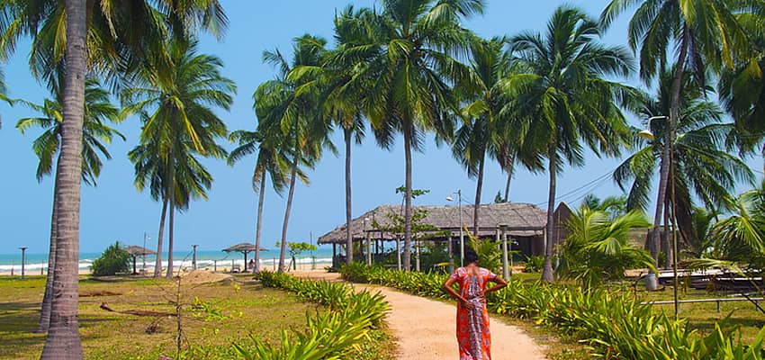

Trincomalee, located on Sri Lanka’s east coast, is renowned for its tranquil beaches, rich cultural heritage, and one of the finest natural harbors in the world. It offers a perfect blend of relaxation, spirituality, and marine adventure.
Nilaveli & Uppuveli Beaches
Nilaveli and Uppuveli are among the most beautiful beaches in Sri Lanka, known for their soft white sands and calm turquoise waters. These beaches are ideal for swimming, snorkeling, and peaceful seaside stays.
Pigeon Island National Park
Just off the coast of Nilaveli lies Pigeon Island National Park, one of the best snorkeling destinations in Sri Lanka. The coral reefs are home to vibrant tropical fish, sea turtles, and reef sharks.

Koneswaram Temple
Perched dramatically on Swami Rock, Koneswaram Temple is one of the most sacred Hindu temples in Sri Lanka. It offers breathtaking ocean views alongside deep spiritual significance and ancient history.

Whale & Dolphin Watching
Trincomalee is one of the best locations in Sri Lanka for whale and dolphin watching, especially between May and October. Blue whales, sperm whales, and playful dolphin pods can often be spotted.